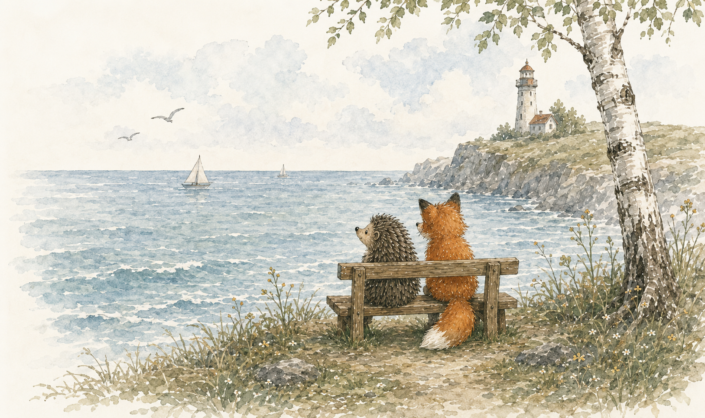
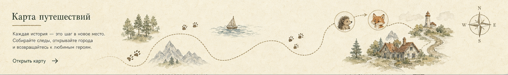
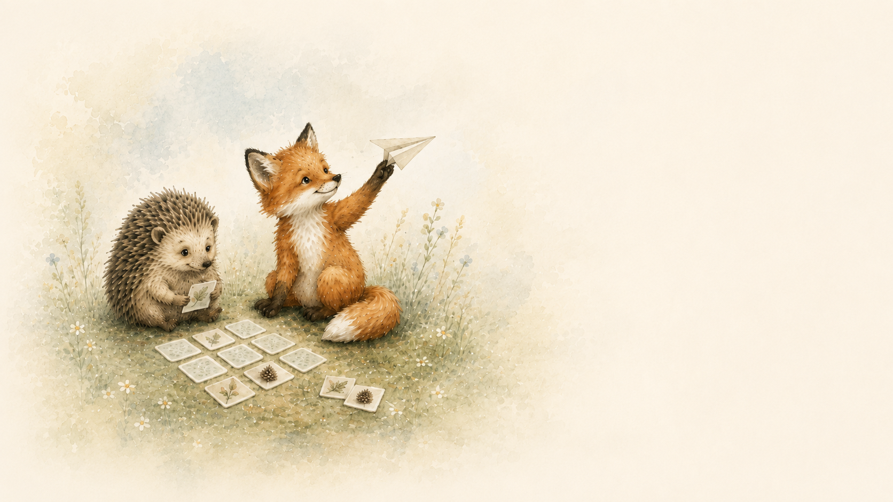
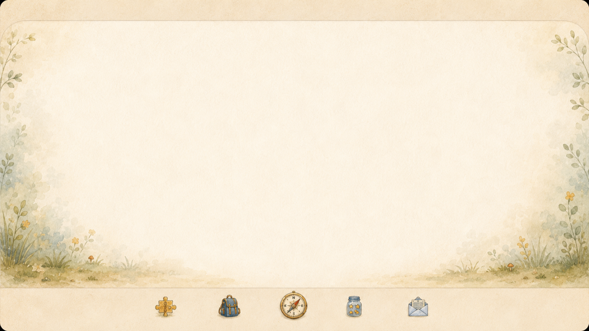
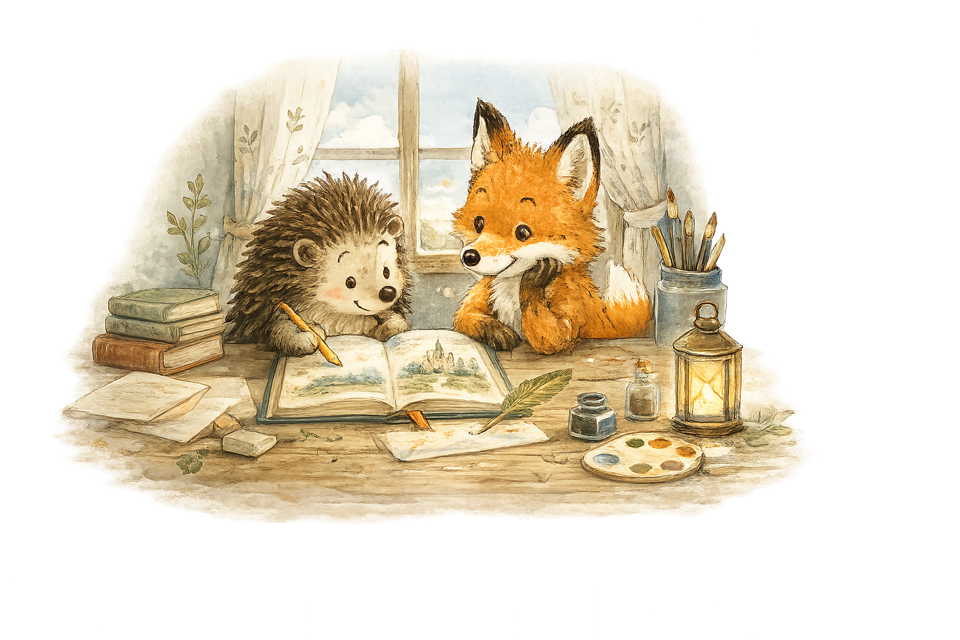

Развиваем воображение
Истории помогают детям мечтать и фантазировать.



Две небольшие игры для перерыва между историями.
Истории помогают детям мечтать и фантазировать.
Каждая история — о важных ценностях и поддержке.
Спокойные и добрые сказки для тёплых вечеров.
Чтение объединяет и создаёт особые моменты.
Тарифы
Семейный
До 20 новых AI-историй для ваших семейных вечеров.
Разовый платёж за 30 дней доступа. Автоматических списаний нет.
Бесплатный режим включает 1 новую историю за 30 дней.

Создать историю
Расскажите, о чём мечтается сегодня, — и Ежонок с Лисёнком помогут собрать добрую книжку.

Моя библиотека
Аккаунт
Без входа истории сохраняются на этом устройстве.
О проекте
«Ежонок и Лисёнок» — это спокойное место для чтения, разговоров и маленьких открытий. Выбирайте готовые истории или придумайте свою сказку специально для ребёнка.
Узнать больше
Добрый, немного застенчивый, но очень чуткий и надёжный друг.

Любопытный, смелый и изобретательный. Всегда знает, где начинается приключение.
Творческая мастерская
Как появились истории про Ежонка и Лисёнка
Эти истории появились не в издательстве и не за большим писательским столом. Они родились дома — из вечерних разговоров, детских вопросов, смешных идей и желания сделать чтение чуть теплее, ближе и понятнее.

А давай они будут друзьями?
Я начал придумывать эти истории для своих дочек.
Сначала это были просто короткие сказки перед сном — такие, которые можно рассказать тихим голосом, когда день уже закончился, в комнате стало спокойно, а за окном темнеет.
Потом у историй появились постоянные герои — Ежонок и Лисёнок. Они не были придуманы “по плану”. Скорее, они постепенно выросли из детских фантазий, вопросов и образов, которые нравились моим дочкам.
Так Ежонок стал немного застенчивым, добрым и очень любознательным. А Лисёнок — смелым, тёплым, живым и заботливым. Вместе они начали искать облака, разговаривать с ветром, находить маленькие тайны в траве и учиться дружить.
В первую очередь — для детей, которым нравится слушать и читать добрые истории.
Эти сказки подойдут детям 5–10 лет: тем, кто только начинает читать сам, и тем, кто уже может читать короткие тексты, но всё ещё любит, когда взрослый рядом.
Я хотел, чтобы истории помогали не только засыпать, но и учиться читать: спокойно, без давления, без скучных упражнений, через знакомых и любимых персонажей.
Когда ребёнок привязывается к героям, ему проще возвращаться к тексту. Он хочет узнать, что случится дальше. А значит — читает не потому, что “надо”, а потому что интересно.
Черновик становится сказкой
Сначала появляется маленькая мысль: облако заблудилось, ветер принёс карту, в траве кто-то шуршит, а на небе зажглась необычная звезда.
Потом появляется вопрос: чему эта история научит? Смелости? Дружбе? Заботе? Умению просить помощи?
После этого рождается первый черновик. Он может быть неровным, с помарками и смешными фразами. Но именно в черновике появляется настроение истории.
А потом история становится короткой сказкой — такой, которую можно прочитать за несколько минут перед сном или днём вместе с ребёнком.
Мне хотелось, чтобы герои были разными, но хорошо дополняли друг друга.
Ежонок часто сомневается, осторожничает и задаёт много вопросов. Он похож на ребёнка, который только открывает большой мир и не всегда уверен, что у него всё получится.
Лисёнок смелее и быстрее. Но его смелость не про шум и победы. Он умеет поддержать, подождать, заметить настроение друга и сказать простые важные слова.
Вместе они показывают, что дружба — это не когда один всегда главный, а когда рядом есть кто-то, с кем легче сделать следующий шаг.
Немного черновиков
Мне нравится мысль, что каждая история сначала бывает несовершенной. Она появляется как набросок: несколько слов, смешная сцена, фраза ребёнка, случайная мысль перед сном.
Поэтому на этой странице есть черновики, карандашные рисунки и пометки — как напоминание, что сказки не возникают сразу готовыми. Они растут постепенно.
 первый черновик
первый черновик
Лисёнок сказал: если облако потерялось, ему просто нужно показать дорогу домой.
 набросок героя
набросок героя
Ежонок хотел быть храбрым. Но сначала он решил быть честным: признался, что ему немного страшно.
 идея для новой истории
идея для новой истории
Добавить здесь тёплый финал. Чтобы после истории хотелось улыбнуться.
 заметка на полях
заметка на полях
Пусть герои говорят просто — так, как говорят дети.
Этот сайт будет постепенно расти.
Здесь будут появляться новые истории, маленькие приключения, добрые открытия и, возможно, целая библиотека сказок, которые родители смогут читать вместе с детьми.
Я хочу, чтобы “Ежонок и Лисёнок” стали местом, куда можно вернуться вечером — спокойно выбрать историю, устроиться поудобнее и провести несколько тёплых минут вместе.